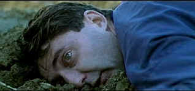

| Humanite/B-,B |
| Winstar/1999/148/ANA
2.25 |
Humanité's contemporary setting is a Northern French town where
bordom seems the order of the day,. Writer/director Bruno Dumont's pacing is often reminscent
of watching icicles melt on the eaves of a house. The film is long and the director likely could
have shaved twenty-five minutes by cutting many of the thoughtful character pauses in half. Despite
the fact that you may grow tired of watching Pharaon De Winter look thoughtfully at the sky,
Dumont's film manages to capture a unique intensity in its stillness.
De Winter is a police superintentent is small town. When confronted by a
shocking murder and sex crime against a young girl, the taciturn policeman is physically repelled.
While the ongoing investigation plods along, De Winter's relationship with a sensual neighbor
Domino and her boyfriend Joseph is explored. The sex between the couple is hot and heavy and
often occurs at unexpected moments. De Winter tags along on social outings, existsing almost in a
trance, confronting life from a twisted tight internal perspective. At work, his boss often looks
askance at his odd behavior. He perfroms his work with a dull, methodical step. Yet, something is
seething within him. What will it take for this man to find the path back to his humanity?
Dumont professes a casting preference toward amateurs, shying away from
the artifice he feels professional bring to their roles. His chosen lead for the center of Humanité
is certainly an interesting choice. Emmanuel Schotte's passive exterior is fightening and reflects
the boredom that surrounds his life. The camera makes enormous demands on the actors ability to
communicate without speaking, and Schotte delivers the goods with an enigmatic phlegmatic inertia.
Severine Caneele breathes sex into Domino. She has a lusty screen presence and seems perfectly
natural at all times.
 |
| The horror! ©Winstar |
The good news about Humanité on DVD is that Winstar Home Video seems to have
discovered anamorphic. Often the transfer is no more than serviceable, but without the added
resolution afforded by 16 x 9 enhancement, the DVD would be decidedly less satisfactory. Colors are
rather muted, as intended by the director, though the patches of flora are intense and richly
rendered. Blue skies are desaturated. A cloud is hanging over these characters. There is edge
enhancement especially evident in high transition compositions. A few long shots of Pharaon walking
in the distance ring very prominently. Overall, the DVD is reasonably sharp. The yellow English
subtitles are easy to read. Dolby Digital French Stereo is simple and clean. Included as added
value on the DVD is an 118 minute video interview with Bruno Duont conducted by film scholar
Michael Jeck. The interview reflects the arcane nature of Dumont's filmmaking process. The listed
1.85 aspect ratio is incorrect. The anamorphic transfer is approximately 2.25:1.
|
|
|
|

Selections from the Feature Archive include articles on
Akira Kurosawa, Frank
Darabont, Blonde Bimbos, Hollywood Street Gangs, or Vietnam: The
Hollywood Pariah, and many more....
The Exquisite Muse of Zhang Yimou

The powerful image-making of Zhang Yimou has revealed itself in
virtually every film he has made. Coupled with his remarkable collaboration with actress Gong Li,
Zhang's has built a stunning body of work Click the image to read all about it.


The
Films2 website contains Films2.com is a comprehensive film website, providing a searchable shop
of new and archived video and region 2 DVDs to buy. You can check local cinema listings, read the
latest film news, reviews and gossip, and see the latest film trailers.

European film portal and hard to find video store.
 Sight and Sound Magazine is the venerable voice of
The British Film Institute. The site includes articles and film reviews. A great resource in print
and on the Internet. Sight and Sound Magazine is the venerable voice of
The British Film Institute. The site includes articles and film reviews. A great resource in print
and on the Internet.

A great place for movie lovers and techies to visit for exchange of
ideas. New speedy interface is an inspiration for more dialogue. Home of Robert( Obi) George's DVD
reviews.

Home Vision Cinema
Classic and foreign motion pictures on VHS tape. The title
selection is excellent and informative essays are provided for many of the films.
|